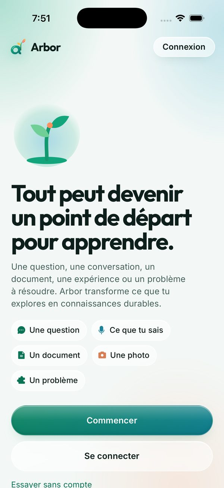

Sessions courtes
Deux à cinq minutes : les cartes dues aujourd’hui, avec la répétition espacée.
Arbor Mobile
Sur téléphone, Arbor va à l’essentiel : les notions à revoir aujourd’hui, une question au compagnon, un scénario rapide. Le même style et le même compte que sur ordinateur.
En attendant l’App Store, Arbor s’installe sur l’écran d’accueil depuis le navigateur, sur iPhone comme sur Android.

Le téléphone ne remplace pas l’ordinateur pour construire un parcours : il entretient ce que tu as appris, partout.
Deux à cinq minutes : les cartes dues aujourd’hui, avec la répétition espacée.
Le compagnon répond à partir de tes cours, et dit quand l’information n’y est pas.
Pour les équipes : consulter une procédure validée, faire un scénario rapide avant le service.
Arbor Web s’installe comme une application : icône sur l’écran d’accueil, plein écran, fonctionnement hors ligne pour tes révisions.
Application iPhone sur l’App Store : en préparation. Elle reprendra exactement le style d’Arbor et ajoutera les rappels de révision natifs. Sa publication demande un compte développeur Apple ; la date sera annoncée ici, pas avant qu’elle soit réellement disponible.